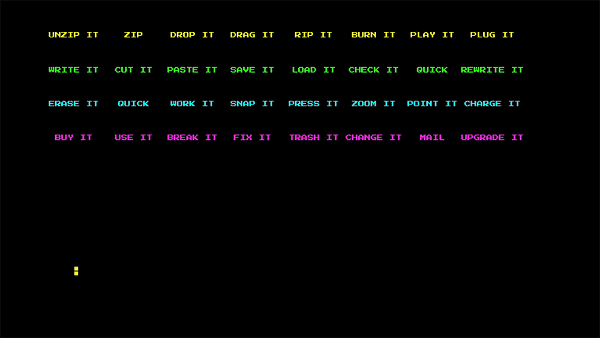

Several games from the 80s as a model of designed interactions for my karaoke video! Qbert and Space Invaders are my favourites, and obviously those two to implement for sure. Still thinking about the other ones. Neither snake nor Pacman fit really, but the interface combination of two...
20:03
20th April

Made a short gif as an overview. All scenes included in their cut version just to showcase everything I drew and animated as a whole, briefly.